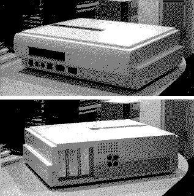

Previous
Next
TOC
Der Atari Falcon040
Der Atari Falcon040 sollte die zweite Maschine der Falcon Computer-
reihe werden. Leider entschloß sich damals die Geschäftsleitung von
Atari aufgrund der Intel/Microsoft Dominanz die Computerschiene ganz
einzustellen und sich erneut dem Videospielmarkt zu widmen. Wie all-
seits bekannt floppte das vorhaben mit dem Jaguar hervorragend.
Die Maschine besitzt eine 3,5 Zoll Floppy, sowie Anschlüsse an der
Frontseite für Netzspannung, Tastatur, Maus und Midi. Im inneren
sind 3 32Bit Slots, eine MC68040 CPU sowie SIMM Modul Steckplätze
und der Anschluß für IDE Festplatten enthalten.

Kapitel Der Atari Falcon040, Seite 1